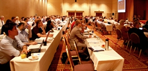
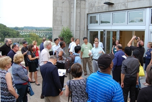
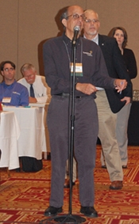
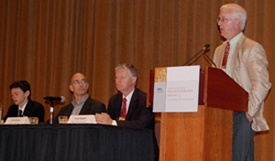
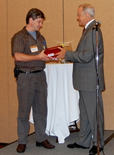
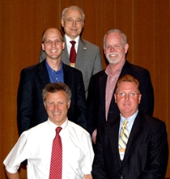
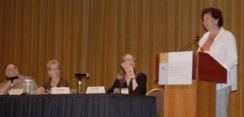
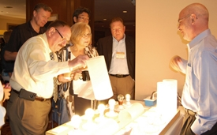
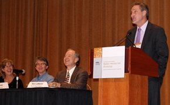

Nearly 200 lighting leaders from across North America gathered in Pittsburgh July 17–19, 2012, for the seventh annual Solid-State Lighting (SSL) Market Introduction Workshop, hosted by DOE. The diverse audience spanned the spectrum: industry, government, efficiency organizations, utilities, municipalities, designers, specifiers, retailers, and distributors. The purpose was to share the latest insights, updates, and strategies for the successful market introduction of high-quality solid-state lighting products.
Pre-Conference Tutorials
The two-day workshop began on July 18 but was preceded by an optional half-day of free, beginner-level tutorials on July 17. More than 120 people attended the tutorials, which covered the basics on LED lighting—technology fundamentals, real-world experiences with LED lighting installations, product testing results, reliability and lifetime, and using the LED Lighting Facts® program. The afternoon culminated in a "stump the chumps" session in which attendees had an opportunity to ask a panel of experts tough questions about LED lighting.
The tutorials were followed by an optional evening bus tour of four LED lighting installations in Pittsburgh. The first stop was Phipps Conservatory and Botanical Gardens, where director of facilities and sustainability Jason Wirick led attendees through the grounds, provided background on his process of selecting LED lighting, and showed how Phipps is using it in desk lamps (3W Finelite), undercabinet lighting (6W Alkco), and exterior building and site pole lighting (74W BetaLED/Cree). The tour bus then passed the south edge of the campus of Carnegie Mellon University, where attendees saw Hunt Library illuminated with LEDs (Philips Color Kinetics Color-Blast 12 LED wash fixtures, and ColorGraze Powercore fixtures with iPlayer controller), as well as the grounds surrounding the library (Cree The Edge Area Round Luminaires). At the next stop, in the Shadyside shopping and dining district, City Councilman Bill Peduto discussed Pittsburgh's LED Project, including its outdoor lighting action plan, and talked about how the city's lighting code was developed and now works as part of the city's sustainability efforts. He explained how, using technical expertise from local universities, the city evaluated nearly 50 different LED streetlights and adopted a lighting code intended to bring uniformity to lighting citywide, before creating a competitive process for fixture selection. Attendees saw LED lights from BetaLED/Cree and King Luminaire. The final stop on the tour was the GNC store in downtown Pittsburgh, where Art McSorley, GNC vice president of retail operations and construction, recounted how the company replaced more than 55,000 incandescent lamps in 2010, and now all of its 3,000+ stores use LED lighting in their displays. He explained why GNC chose Sylvania 770-lumen and Lighting Science Group 960-lumen LED PAR30 lamps for its retail storefronts, and noted that the payback is estimated at 1.1 years.
Pricing, Cost-Effectiveness, and Financing
On July 18, DOE SSL Portfolio Manager James Brodrick kicked off Day 1 of the workshop by observing that the solid-state lighting market is moving at warp speed, with prices falling while performance continues to improve in multiple ways, and with LED products becoming viable, cost-effective options in a growing number of applications. He noted that because SSL is fundamentally different from the incumbent lighting technologies, it's not a one-for-one replacement solution but one that requires knowledge and thought on the part of the purchaser or specifier. Brodrick reiterated DOE's goal of helping to make the transition to SSL less problematic and risky and more successful, and reviewed the various DOE resources and tools, such as CALiPER, GATEWAY, and LED Lighting Facts. He emphasized that collaboration is the key to moving the industry forward and accelerating market acceptance.
A panel discussion entitled "Product Pricing, Cost Effectiveness, and Financing" followed, moderated by Brodrick. Jed Dorsheimer of the investment bank Canaccord Genuity discussed the economics of LED manufacturing. Noting that lighting accounts for 17 percent of worldwide energy consumption, he predicted significant increases in the adoption of solid-state lighting by the middle of this decade. Dorsheimer observed that at present, there is a lot of room for improvement in SSL, from a chip perspective as well as from a system perspective. But he expressed doubt that energy efficiency would remain the mainspring behind SSL adoption. "I think that energy efficiency is ultimately going to be a red herring," he said, explaining that the technology's energy efficiency will become taken for granted, with its other advantages adding value for the consumer. The keys, Dorsheimer told attendees, are downstream innovation and standards development.
Bill Hamilton of The Home Depot (THD) followed with a discussion on trends in LED lighting. He noted the changes that have taken place since his company started selling LED lighting products back in 2009, adding that today THD offers more than 100 LED lighting options. Hamilton described how THD conducts thorough quality testing on all of these products and requires all manufacturers to participate in the LED Lighting Facts program. He observed that the decrease in SSL prices has accelerated adoption, but prices are still not low enough to appeal to the average consumer. Hamilton said that about 600 of THD's stores are covered by utility rebates for LED lighting products, and those rebates often result in the store selling out of the product. He predicted that SSL adoption will skyrocket in 2015, as costs continue to come down. "We're going to see this [SSL] explode," he said, adding that it's already growing exponentially.
Edward Smalley of Seattle City Light—who also serves as director of DOE's Municipal Solid-State Street Lighting Consortium—discussed LED street lighting costs and financing. Noting that costs are continuing to come down, he said that price is becoming less of a hurdle for cities interested in switching their streetlights to LED. Whereas a few years ago LED street lighting cost three or four times as much as its traditional equivalents, Smalley said that today it's closer to twice the price, which can make it much more competitive. He described the Financial Analysis Retrofit Tool developed by the Consortium to help cities determine the real cost of switching to LED street lighting. Smalley talked about financing such a switch, citing Los Angeles and New York as examples but explaining that smaller cities can also make it work, and adding that joining together to make bulk purchases is one way to help reduce the costs. "We've made a lot of strides over the last 36 months, and we'll continue to make them," he said.
Lessons Learned in the Great Outdoors
Next came a panel on lessons learned in outdoor lighting installations, moderated by Michael Myer of Pacific Northwest National Laboratory (PNNL). Richard Montanez of the City of Philadelphia talked about the LED street lighting pilot project his city is conducting as part of a larger green initiative. He explained that the goals of the project, which is being undertaken with the help of DOE's Consortium, are to test the latest products, advance the state of LED street lighting, and gauge public opinion. Montanez reviewed his city's checklist for selecting LED street lighting products, which includes such things as requiring the LM-79 report from an independent test lab, with the LED array tested inside the fixture; carefully considering the fixture manufacturer's approach to thermal management; and establishing what the warranty policy is. In discussing financial considerations, he described some of the challenges, including the local utility's resistance to changing its street lighting tariff to allow Philadelphia to take full advantage of LED street lighting.
Glenn Cooper of the City of Boston followed with a discussion of his city's LED street lighting initiative, which began in 2009 with a pilot program to determine feasibility and life-cycle costs and has expanded to convert 15,000 streetlights to LED, with more conversions still to be done. He explained that the initial cost of the LED fixtures was $600 per unit in 2009 but had dropped to less than $200 by the summer of 2010, which was competitive enough to proceed with the project. Cooper said that the color rendering and uniformity of coverage of the LED streetlights are excellent compared with high-pressure sodium, and that so far citizen response has been positive. "A lot of people haven't even noticed the change," he said, adding that the energy savings just from converting the city's cobrahead fixtures is projected to be $2.8 million, with a payback of less than 1.5 years.
Consultant David Crockett recounted the role solid-state lighting has played in helping to revitalize the City of Chattanooga, TN, which had been suffering economically, culturally, and environmentally but is now thriving thanks to the cooperation of various municipal agencies. He described how converting to LED street lighting is more than just an integral part of the city's drive to become greener—it has also saved money on energy and maintenance. But Crockett emphasized that the value of LED street lighting went well beyond economics by helping to save a Chattanooga business district threatened by high crime rates. He explained that installing LED street lighting with controls played an important role in the package of investments made by the city to revitalize this area. The controls enabled the city to adjust lighting levels instantly, which helped drastically reduce crime and change this once-moribund area back to a bustling business district.
Understanding Reliability and Lifetime
A panel on solid-state lighting reliability and lifetime was moderated by Fred Welsh of Radcliffe Advisors, who chaired the DOE/NGLIA working group that developed a set of recommendations for testing and reporting LED luminaire lifetime and currently chairs the DOE/NGLIA LED Systems Reliability Consortium. He set the stage by providing some background on the issue, noting that luminaire lifetime is very hard to measure because it is not just a question of LED lumen depreciation, but one that involves many possible failure mechanisms. Welsh dismissed as impractical the idea of measuring a sample product over a long period of time but listed three potential alternatives: stating a warranty instead of claiming a lifetime; stating how long it takes for LED light output to depreciate to 70 percent of lumen depreciation of initial output, without calling it lifetime; or stating the predicted lumen depreciation over a given time period. "Ultimately, we think the right answer is to take a system reliability approach," he said. In the meantime, DOE has integrated these three alternatives into the LED Lighting Facts program as optional metrics for the label. Jason West from D&R International offered a more detailed look at the three options and how manufacturers might include this information in their product submissions.
Jim Gaines of Philips Lighting offered a manufacturer's perspective on system reliability for SSL products. Defining reliability as the probability that the equipment will perform its intended function, under stated conditions, for a specified period of time without failures, he articulated the SSL manufacturer's basic dilemma as having to do a lot of work to ensure long lifetime, for a product that will only be sold for a short time. Gaines reviewed the five key components of SSL products that can affect lifetime: the LED engine, the optics, the electronics, the cooling system, and the mechanical construction. He noted that Philips has identified 30 different failure modes, and that testing is essential to ensure that the product design is sound enough that none of those modes will come into play. Gaines stated that de-rating by itself is not enough: "You have to look at all the potential interactions between the components."
Lynn Davis of RTI International talked about the work he and his colleagues are doing to build a system reliability model for SSL luminaires, in collaboration with the LED Systems Reliability Consortium chaired by Welsh. Davis reviewed the types of failure, including lumen depreciation, color shift, reduced energy efficiency, and catastrophic failure, which he noted can occur at various stages of a product's life and can be due to such things as electrical surges, corrosion from moisture, and damage from repeated vibration. Davis discussed the challenges of building the model and said his group is focusing initially on downlights and area lights and leveraging the existing literature as a guide. Their approach, he noted, is to start with a limited set of extreme stressors. "One of the things that we've found so far is that SSL luminaires are very resistant to a lot of challenges," he said. "You really have to get a very big 'hammer' and hit it hard to get these things to fail."
LED Replacement Lamps
Next, Brodrick gave an update on the commercial and residential rollout of the first L Prize-winning bulb and what's next for the competition, which was created by the Energy Independence and Security Act of 2007 and focuses on LED replacements for two key lamp types: the 60W incandescent and the PAR38 halogen. He noted that the first L Prize was awarded in August 2011 in the 60W replacement category, and that the winning product is now available through a variety of channels and is the subject of incentives and rebates from nearly 500 utilities nationwide. Brodrick stated that while the 60W category of the competition is now closed, the PAR38 category was reopened in March 2012, with a streamlined evaluation process to move winning products to market faster. "The horse race has started," he said.
Holly Kroll Smith of D&R International moderated a panel on LED replacement lamp trends. To set the stage, she reviewed the results from an LED Lighting Facts program survey of major retailers, as well as from a forthcoming LED Lighting Facts Product Snapshot. The survey, conducted from February 2011 through February 2012, found that shelf space for halogens and LEDs is increasing, and that LED and halogen prices decreased while compact fluorescent (CFL) prices increased. Smith said the average lifetime of halogens, LEDs, and CFLs has remained constant, but incandescent lifetime is increasing, although at the expense of decreased lumens. As for the Product Snapshot, she stated that LED replacement lamp performance has improved since 2009, adding that light output in particular has steadily increased for top-performing products in all categories. However, there is still a high degree of variability in performance between products, so partners should continue to exercise caution when evaluating them.
Reviewing global trends in LED replacement lamps, Vrinda Bhandarkar of Strategies Unlimited noted that they accounted for $2.1 billion of the $9.8 billion LED lighting market in 2011, and that the top four categories of LED replacement lamps were A19s (43 percent), linear fluorescent tubes (25 percent), PARs (16 percent), and MR16s (12 percent). She observed that between 2001 and 2010 in the U.S., average efficacy increased 37 percent for commercial lighting and 12 percent for outdoor lighting. Bhandarkar identified China as the largest manufacturer, with more than 4,000 enterprises involved in making LED lighting, most of them small operations. She predicted that emerging markets will be the main targets for lighting growth in the next few years, and that replacement lamps will be a major factor in SSL for at least the next five years.
Michael Royer of PNNL discussed the results of the latest CALiPER study of LED replacement lamps on retail shelves, comparing the results with a previous study of products purchased in the summer of 2010. He noted that in 2010, there were large disparities between high- and low-performing products, with most of the lamps failing to meet basic performance parameters for use as replacements for incandescent or halogen lamps, and with most retailers carrying at least some very low-quality products. Since then, Royer observed, overall performance has improved a great deal, with higher lumen output and efficacy and better color rendering. In addition, he said, there's been a significant increase in performance per dollar, although the cost is still higher than incandescent lamps and CFLs. Royer remarked that there are still some products that would not make good replacements for conventional lamps, so careful evaluation is important.
Tom Harold of Grainger described how his company's partnership with DOE has helped guide its LED portfolio decisions for the past four years. His main focus was on the LED Lighting Facts program, but he also cited CALiPER testing, GATEWAY demonstrations, and SSL Postings as resources that have been of significant benefit. Harold said that Grainger has gone from carrying 120 LED lighting solutions three years ago to carrying well over 750 today, adding that Grainger requires LED Lighting Facts registration for all of the SSL products it carries. Harold also reviewed the results of product testing that Grainger conducted in August 2011, which showed that overall, most performed in accordance with manufacturer claims and had very few performance issues.
Brodrick then gave special recognition to seven LED Lighting Facts partners who have made a significant commitment to actively and creatively integrating the program into their selection process for SSL products:
- Priority Lighting
- Lowe's
- Green Energy Products
- Northeast Energy Efficiency Partnerships
- The Home Depot
- Grainger
- Efficiency Vermont
At an evening reception, attendees had an opportunity to network and learn more about some of SSL's biggest issues at three interactive exhibits. These focused on dimming (dubbed "the elephant in the room"), replacement lamp equivalency ("the gorilla in the room"), and color quality ("the zebra in the room") and offered hands-on demonstrations of how the dimming behavior of different lamps on the same circuit can vary widely, how two products with the same CRI can show colors differently, and how equivalency claims can be misleading.
The Environmental Footprint
Kicking off Day 2, Heather Dillon of PNNL presented the results to date of an ongoing three-part DOE study of the life-cycle environmental impact of LED lighting. Part 1 concluded that CFLs and today's LEDs are similar in energy consumption— both using considerably less electricity than incandescent lighting—and that the "use" phase is by far the most important contributor to energy consumption in the life-cycle of these products. Part 2 found that the energy these lamps consume in the use phase constitutes their dominant environmental impact, and that LED lamps have a significantly lower environmental impact than incandescent lighting and a slight edge over CFLs. The CFL was found to be slightly more harmful than today's LED lamp on all impact measures except hazardous waste landfill, where the LED lamp's large aluminum heat sink causes greater impact because of the energy and resources consumed in manufacturing it. The least harmful was the LED lamp projected for 2017. The results of Part 3 are expected to be released in the fall of 2012.
A Perspective from Lighting Showrooms and Lighting Installers
A panel on lessons learned in lighting showrooms was moderated by Naomi Miller of PNNL, who noted that lighting showrooms are an important part of the industry, especially for residential customers, and that "LEDs pose a whole new set of problems beyond what these people have been dealing with in the past."
Laurie Gross of Gross Electric, an electrical distributor and lighting showroom in Toledo, OH, said a major concern she has is the potential for rapid obsolescence resulting from the fast pace at which SSL is developing. She told the audience she won't consider carrying LED lighting products that don't have some sort of return or obsolescence policy and a warranty of at least three years. Gross emphasized interchangeability as an important characteristic of SSL, so that new and improved product versions and components can easily replace superseded ones. She also described how she tests every new LED lighting product she carries to make sure it "plays well with others"—i.e., that the colors are similar to those of comparable products.
Mary Ann Kelly of Platinum Lighting Concepts, Inc., a Pittsburgh-area showroom that carries LED undercabinet, accent, and landscape lighting as well as LED retrofit products, observed that her customers don't mind paying a little bit more if they're going to get extra benefits for their money, but it has to be an easy change for them or they'll resist it. When it comes to SSL, she said, some of those benefits could come from the potential to tune LEDs to various parts of the visible spectrum. Since the spectral quality of light has been shown to affect our circadian rhythms, Kelly noted, solid-state lighting could be used to positively affect health in hospitals and nursing homes, schools, and even at home.
Mark Schulkamp, a San Francisco Bay Area electrical contractor, offered an installer's point of view on LED lighting products. He observed that with LED systems, even "plug-and-play" components often create new challenges, and that success in a project becomes a "moving target" because the technology's unique differences mean that doing things the same way as before is no longer an option. Schulkamp cited dimming as one example, because most existing dimmers were designed for incandescent lamps and may not work as intended with LEDs—creating a wide range of dimming behavior that may not be acceptable to the end user. He acknowledged the potential advantages of LED light sources but cautioned that at this point in time, the substitution of LED sources for their traditional counterparts is not yet an equal swap, except with regard to lumen output, and that the results aren't always as expected. That's why, Schulkamp emphasized, it's essential to see mockups in advance, to compare new products with familiar ones.
Incorporating SSL into Energy Efficiency Programs
Marc Ledbetter of PNNL moderated a panel on weaving LED products into existing lighting efficiency programs, highlighting key observations that emerged at a DOE-hosted roundtable attended by representative utility and efficiency program managers in April. Fred Gordon of Energy Trust of Oregon discussed his organization's approach to solid-state lighting, focusing on how utilities, manufacturers, and distribution channels can promote the right LED products in the right niches, where LEDs have clear advantages over incumbent technology. He noted that Energy Trust of Oregon relies on testing and test specification from manufacturers and DOE, and on ENERGY STAR® and the DesignLights Consortium (DLC) for equipment qualification and specifications. Gordon said that while some SSL products are worthy of incentives, others are poorly conceived or designed, and still others need to come down 50 percent in cost and increase their lumen output. "If LED provides a little more bang for a lot more buck, it's a bad fit; but the reverse makes it a good fit," he said. Examples of niches that have been approved for incentives, Gordon noted, include such applications as recessed downlighting, screw-in LED lamps for commercial use, freezer case lighting, and parking lot lighting—with street lighting about a year or two away.
Vireak Ly of Southern California Edison (SCE) talked about the role of energy efficiency programs in helping to transform the lighting market to one that is more energy efficient. He noted that with the advent of lighting controls, which enhance energy savings, the technology associated with solid-state lighting is getting more complex, thus increasing the need for information and education. Ly suggested color-coding LED replacement lamps in the fashion of Garanimals® mix-and-match children's clothing, to make it easy for consumers to know which products are compatible with which dimmers. He added that lighting design guides and product engineering guides would be helpful in getting the market up to speed more quickly than is happening now, and noted that SCE shares application-specific best practices. Ly said the key to accelerating lighting market transformation is to leverage focused information and targeted education through collaboration and coordination across all market actors.
Dan Mellinger of Efficiency Vermont discussed the challenges his program faces in incentivizing LED lighting products. One such challenge, he said, is product qualification, which is required by the bodies that regulate utility and energy efficiency programs. Mellinger noted that ENERGY STAR and the DLC play a vital role in qualifying products, but the increasing number of product lists has become overwhelming for efficiency program managers to navigate. He and many of his peers advocate the creation of a single, central portal that would allow one-stop access to product list data. Another key challenge Mellinger cited involves the regulatory compliance process, which can take six to 12 months from proposal to implementation. That timeline is problematic for rapidly evolving LED products, since the underlying assumptions regarding performance and price might become out of date. Mellinger observed that LED products accounted for just three percent of Efficiency Vermont's commercial lighting portfolio in 2009, whereas today that figure has grown to 46 percent.
Commercial Ambient Solutions
Michael Myer of PNNL moderated a panel on commercial ambient LED lighting solutions. Panelist Greg Galluccio of Leviton Manufacturing Company discussed interchangeability, upgradeability, and modularity as the key factors for LED implementation in the commercial ambient lighting market. He called the lack of interchangeability and upgradeability a major challenge for LED implementation, along with conflicting or confusing information, unproven claims, and fear of obsolescence. Galluccio noted that LED fixture manufacturers are turning toward modular, interchangeable, and cross-compatible designs but emphasized that trying to adapt existing form factors and connectivity methods is not always the best solution. He cited the Zhaga specifications as a vehicle for ensuring interchangeability and compatibility, and predicted that cooperation and standardization among product manufacturers will become more prevalent.
Naomi Miller of PNNL discussed recessed 2'x2' and 2'x4' troffers, which are the most common fixtures seen in commercial buildings. She focused on an upcoming CALiPER study of troffers—to be conducted in 2012—that will examine LED integral luminaires, LED T8 retrofit tubes, and troffer retrofit kits. Miller said the new study will help lighting designers, specifiers, and other stakeholders make the right choice among these options. She noted that the study, which will involve 16 designers, engineers, and specifiers, will provide valuable feedback to manufacturers on LED lamp, kit, and fixture design, and will inform future CALiPER investigations on Type A luminaires, kits, and LED tubes.
Rick Miller of RNM Engineering talked about controls for LED lighting. He stated that whereas commercial lighting fixture retrofits get a lot of attention, lighting controls are usually installed and updated only in new construction projects or major renovations. Miller reviewed the three lighting control strategies—local, building-level, and centralized—and emphasized the importance of writing out a thorough control narrative. He also reviewed the differences between wired and wireless digital control systems. Miller explained that the greatest energy savings are achieved through the simultaneous deployment of all lighting control strategies, and that for simultaneous deployment of all lighting control strategies, wired and/or wireless digital lighting controls are required.
Lessons Learned from Facility Managers
Marc Ledbetter of PNNL moderated a panel on lessons learned about LED lighting from the managers of retail, healthcare, and commercial buildings. Pat Lydon of Legacy Health—a healthcare network in Portland, OR—discussed the use of SSL in healthcare institutions. He reviewed some of the lighting considerations that characterize those institutions, such as 24/7 operation, the effect of light on circadian rhythms of the patients and staff, and the need to avoid radio-frequency/electromagnetic interference with key equipment. Lydon noted that at Legacy Health, SSL has been confined to exit signs, operating rooms, MRI rooms, downlights, wallwashing, under-shelf strips, and desktop task lights. He said there haven't been any qualitative issues yet, but he has noticed a lack of standards and unclear selection criteria. Lydon cited first cost as an important consideration, adding that incentives help a lot, and said he looks for independent, credible validation of claimed performance specs and utilizes LED Lighting Facts, CALiPER reports, the DLC, and ENERGY STAR.
Cheryl Penkivech of Target talked about her company's use of LED lighting. She stated that Target currently uses SSL in a few places in all of its stores and is considering it for expanded applications. Penkivech said that the retail chain has been using LED refrigeration lighting since 2008, in conjunction with occupancy sensors, and that maintenance has comprised a large part of the total cost savings, with energy savings of more than 50 percent with reach-in refrigeration units and 75 percent with open-deck units—and with decreased refrigeration required because the LEDs generate less heat. She noted that Target also uses LED linear fixtures in new walk-in coolers and freezers, resulting in increased light output for better visibility and requiring less maintenance, as well as in LED retrofit lamps incorporated into incandescent track heads, fitting room downlights and mirror halo lights, and LED arcs to replace neon lighting. Penkivech said that the company is currently testing LEDs in parking ramps, wallpacks, and valance lighting, along with refrigerated distribution centers.
John Scott of Colliers International, a commercial real estate company, discussed the use of LED lighting in that field. He observed that with SSL retrofits, there is often a split-incentive problem—a lot of tenants don't want to pay for retrofits because their leases are only for three years, and if the owner pays for the retrofit, the tenant is the one who reaps the energy-saving benefit, so from a return-on-investment perspective, it's hard to justify. Scott said that first cost is still a major driver in decision-making and noted that one of the first LED applications his company has worked with has been site lighting, which typically has a payback of less than three years. As for LED refrigerated display case lighting, he said the retail strip malls he typically manages mainly have mom-and-pop tenants that don't have the capital to make the switch. Scott predicted that LED troffer lighting will become a "game-changer" because of its suitability for commercial settings.
Brodrick concluded the workshop by thanking participants for their input and participation. He noted that the next DOE SSL workshop—the tenth annual SSL R&D Workshop—will be in early 2013 on the west coast, and he encouraged attendees to stay apprised of all DOE SSL program activities by visiting www.ssl.energy.gov.